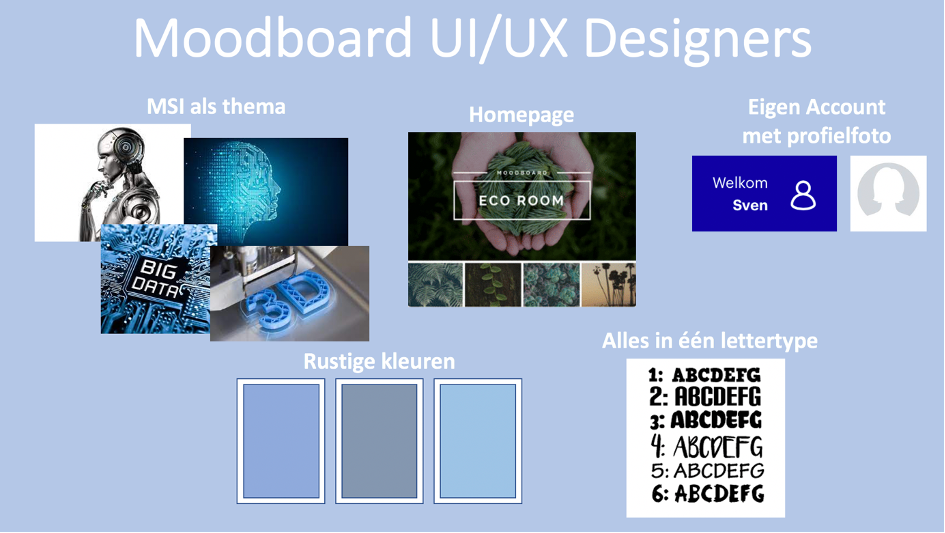

Week 2 : HTML & CSS
In deze week stonden de thema's HTML & CSS centraal voor de workshop. In de voorbereiding hierop was ik zelf al aan de slag gegaan met de crash course over HTML en de crash course over CSS. Dit hielp meteen wel enorm mee om een redelijke basiskennis van deze twee onderdelen te vergaren, desondanks bleef het wel lastige taal voor mij als een leek. Daarentegen heeft de site w3schools.com mij wel enorm verder geholpen met het schrijven in HTML.
Uiteindelijk hoop ik de basis van HTML goed onder de knie te krijgen en boven mijn eigen verwachtingen uit te stijgen. Desondanks verwacht ik dit nooit als de beste te gaan beheersen. Stel dat ik later bijvoorbeeld in het bedrijfsleven een website op zou moeten zetten, dan helpt het mij enorm om aardig wat kennis te hebben. Alleen wanneer het erg gecompliceerd worden zal ik er zeer waarschijnlijk toch zeker wel voor kiezen om iemand in te huren die ook bijvoorbeeld meer van beveiliginge etc afweet. Desalniettemin is het erg leuk om de basis te weten en kom ik al verder dan ik zelf van tevoren had verwacht.
Moodboard
Vorige week hadden we als UI/UX designers-groep afgesproken om allemaal een eigen moodboard te maken en die deze week samen tijdens een online-meeting te gaan bespreken. Tijdens deze meeting heb ik mijn eigen gemaakte moodboard ook gedeeld, hierin heb ik de dingen benoemd die ik belangrijk vond hiervoor. Dit moodboard valt hieronder terug te vinden. Gezamenlijk zijn wij uiteindelijk ook tot een moodboard gekomen met redelijk vergelijkbare onderdelen en eisen. Deze hebben wij vervolgens overhandigd zodat de volgende groep daarmee verder kon gaan.
